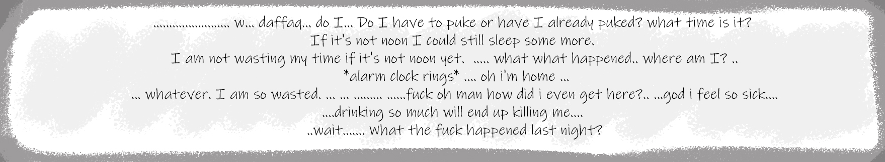
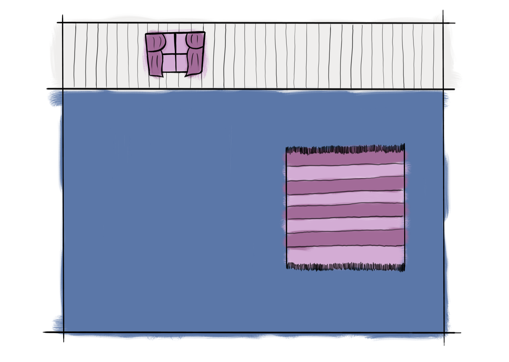
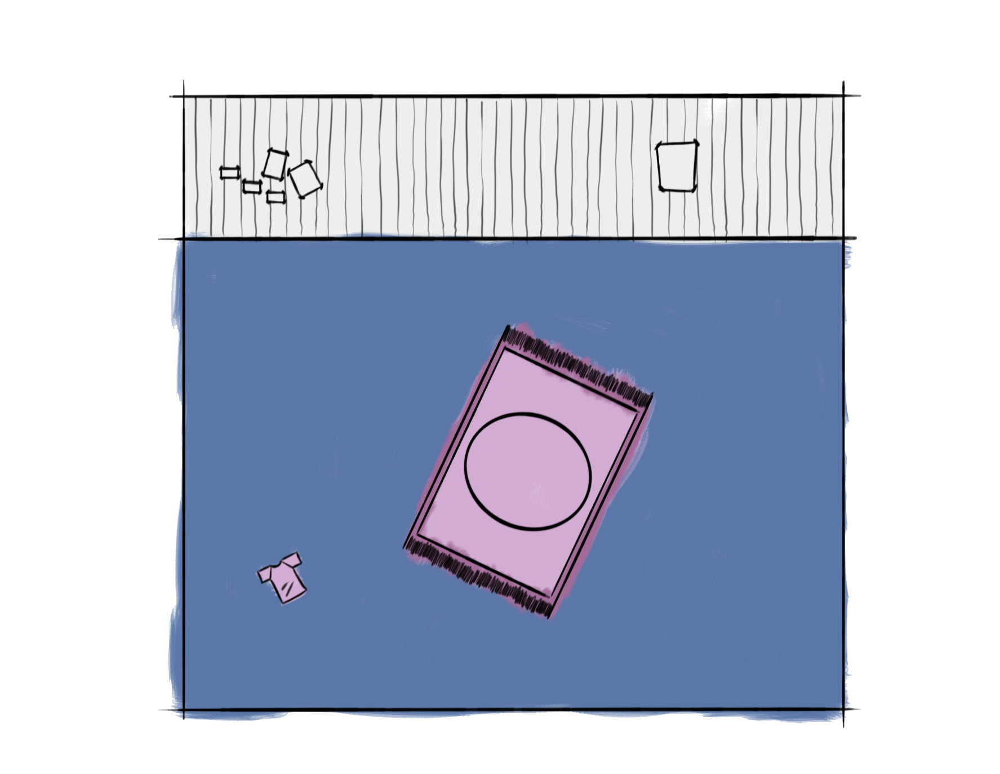

Global Game Jam 2021 — Tema: Lost & Found
Post-Umi
/Introduzione_Al_Gioco
Post-Umi è il mio primo ingresso nelle Global Game Jam: gennaio 2021, jam tutta online, sede Gruppo Game Jam Roma, tema Lost & Found. Da qui parte la linea che sul sito continua con Burning Keys, Undergroove e Shit! Shit! Shit! — prima in C# su un framework 2D scolastico, poi in Unity.
Ti svegli in camera dopo una festa fuori controllo, chiuso in casa e senza la chiave. Un point & click top-down: click destro per muoverti, sinistro per interagire. Ogni oggetto riaccende un frammento della notte e di un rapporto che avevi smarrito.
Il gioco non punta alla perfezione tecnica: punta a chiudere un’esperienza giocabile in pochi giorni, in squadra, con fame e paranoia che stringono mentre esplori stanze sempre più strane. Per me è stato il primo weekend in cui «finire il build» contava più del codice pulito.
/Crediti
- Game design — Samuele Feliciangeli
- Code — Lorenzo Guerrini, Mauro Cirafisi, Antonio Troiano
- Art — Agnese Lucchese, Benedetto Musso
- Music — Mauro Cirafisi
Sul codice mi sono occupato soprattutto della casa esplorabile: stanze collegate, porte tra gli ambienti e i dialoghi di apertura che introducono il risveglio. Audio, fisica e gli effetti «glitch» legati alla paranoia sono stati curati dagli altri programmer del team.
/Mie_Note_Sul_Progetto
Non avevo ancora l’abitudine delle jam Unity: tutto girava su AIV Fast2D, con Visual Studio e una repo condivisa dove ognuno spingeva fino all’ultimo minuto. Ricordo più il ritmo del team che i dettagli del codice — e va bene così per un progetto del 2021 che oggi racconto come origine, non come pezzo da mettere in vetrina tecnica.
Quello che mi è rimasto è il metodo: spezzare il lavoro, tenere il gioco navigabile stanza dopo stanza, non bloccare gli altri. Le jam successive hanno cambiato engine e scala, ma il primo passo è stato questo: svegliarsi chiusi in casa e cercare di ritrovare qualcosa — nel gioco e, in piccolo, nel modo di lavorare insieme.
— Antonio Troiano
/Screenshot
Still e sfondi dal repository del progetto (jam 2021).


